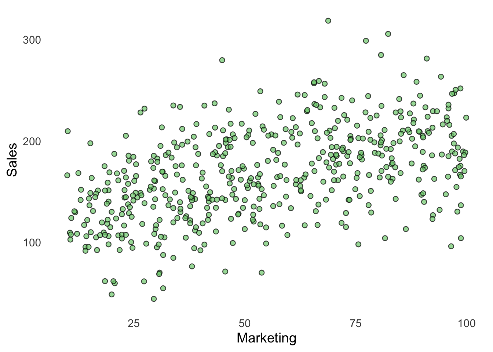
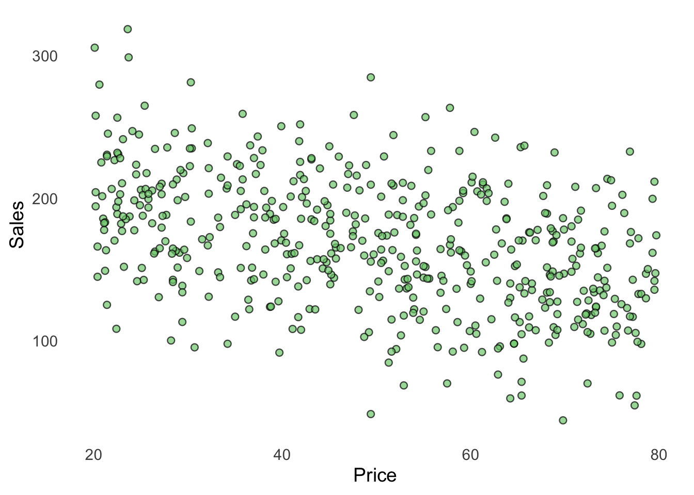
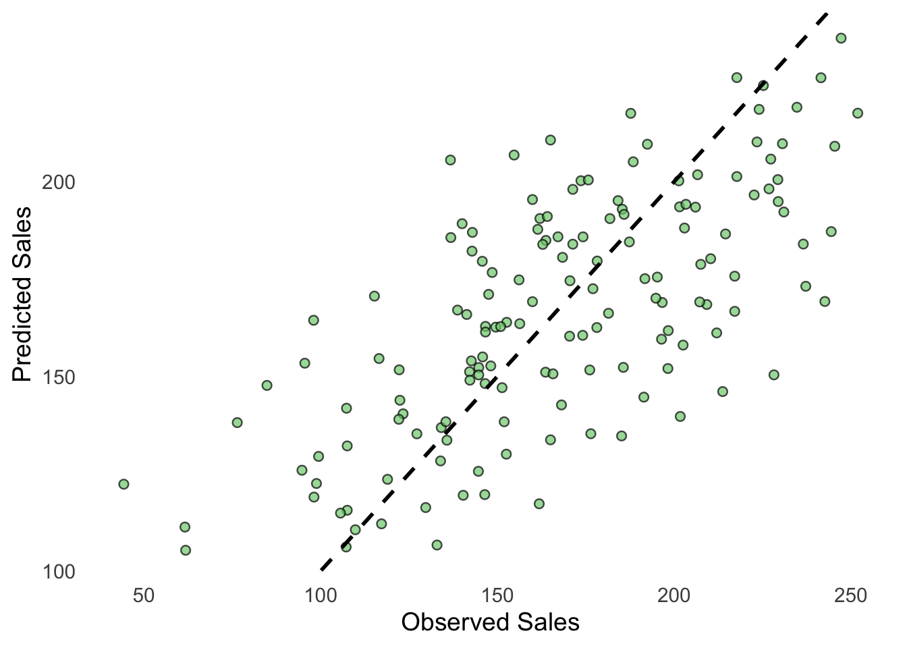
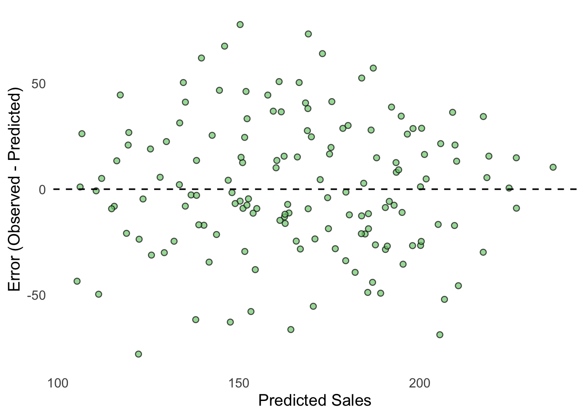

# Clear Environment
rm(list = ls())
# Load packages
library(tidyverse)
source("Functions/EDA_functions.R")
source("Functions/linear_regression_functions.R")12 Linear Regression: Lab 2
Model Selection, Validation and Business Decision
12.1 Introduction
In the previous lab, we introduced supervised learning and the basic predictive modeling workflow. We learned how to:
- identify an outcome variable;
- identify predictor variables;
- split the data into training and test data;
- fit a linear regression model using training data;
- make predictions;
- calculate prediction errors;
- evaluate predictive performance using test data.
In this lab, we take the next step. In practice, we usually have several possible models. Some models are simple, while others include more predictors or more complex relationships.
We will turn to multiple regression analysis. Read Sections 3.2 and 3.3 in An Introduction to Statistical Learning - with Applications in R before working with the lab. Also read relevant parts of Chapter 6 in An Introduction to Statistical Learning - with Applications in R before working with the lab.
In this lab we will extend our modeling workflow to include model comparison and model selection. The workflow will be:
Business problem → Split data → Fit candidate models → Compare models → Select one model → Evaluate on test data → Business decision
We will continue to split the data into:
- training data — used to fit and compare models;
- test data — used to evaluate how well the selected model predicts new observations.
12.1.1 Learning objectives
After completing this lab, you should be able to:
- explain the difference between training and test data;
- fit several regression models;
- calculate and compare training errors;
- compare alternative models;
- select a model based on training performance and other relevant considerations;
- evaluate the selected model using test data;
- visualize prediction errors;
- translate model performance into a business recommendation.
12.1.2 Prepare the R session
12.1.3 Import the Data
We continue with a sales prediction problem. The company wants to predict sales using information about its marketing activities, prices, competitors, and customers.
df <- read.csv("Data/regression_data2.csv")Take a first look at the data.
head(df) sales marketing price competitors income
1 212.0 35.9 41.2 5 68461
2 185.7 80.9 42.0 8 48683
3 217.1 46.8 37.2 2 56138
4 244.8 89.5 24.8 3 52567
5 216.4 94.6 41.9 6 47767
6 95.5 14.1 30.7 7 48555Inspect the descriptive statistics.
summary(df) sales marketing price competitors
Min. : 44.3 Min. :10.00 Min. :20.10 Min. :1.000
1st Qu.:136.7 1st Qu.:32.10 1st Qu.:35.60 1st Qu.:3.000
Median :167.2 Median :52.90 Median :50.75 Median :5.000
Mean :168.3 Mean :54.58 Mean :49.96 Mean :4.674
3rd Qu.:201.3 3rd Qu.:75.97 3rd Qu.:65.33 3rd Qu.:7.000
Max. :318.7 Max. :99.90 Max. :79.70 Max. :8.000
income
Min. :20000
1st Qu.:41976
Median :50033
Mean :50272
3rd Qu.:57615
Max. :88209 12.1.3.1 Questions
- How many observations are in the dataset?
- Which variable is the outcome variable?
- Which variables could potentially be used as predictors?
- Why might using several predictors improve our predictions?
12.1.4 Explore the Data
Before building models, we should understand the variables in our data and the relationships between them. One way to explore these relationships is to create a correlation matrix.
Correlation measures the strength and direction of the linear relationship between two variables. Correlation values range from -1 to 1:
- values close to 1 indicate a strong positive relationship;
- values close to -1 indicate a strong negative relationship;
- values close to 0 indicate a weak or no linear relationship.
A correlation matrix allows us to quickly examine these relationships across several variables at the same time.
df |>
select(where(is.numeric)) |>
cor() |>
round(2) sales marketing price competitors income
sales 1.00 0.49 -0.42 -0.37 0.38
marketing 0.49 1.00 0.04 -0.01 -0.01
price -0.42 0.04 1.00 0.01 0.01
competitors -0.37 -0.01 0.01 1.00 -0.09
income 0.38 -0.01 0.01 -0.09 1.00Visualize some important relationships with a scatterplot. Let’s choose marketing and sales first, and then price and sales. You can easily change the variables.
scatterplot(
df,
marketing,
sales,
xlab = "Marketing",
ylab = "Sales"
)
scatterplot(
df,
price,
sales,
xlab = "Price",
ylab = "Sales"
)
12.1.4.1 Questions
- Which variables appear to be related to sales?
- Which relationships appear positive?
- Which relationships appear negative?
- Are there predictors that appear to contain little information about sales?
12.1.5 Training and Test Data
As in the previous lab, we divide the data into training data and test data.
| Dataset | Purpose |
|---|---|
| Training data | Fit, develop, and compare models |
| Test data | Evaluate predictive performance on new observations |
In this lab, we use:
- 70% training data;
- 30% test data.
Important
The models are fitted using the training data.
We will also initially compare how well the different models fit the training data. However, better training performance does not necessarily mean better performance on new observations.
The test data allow us to examine how well the selected model generalizes to observations that were not used to fit it.
12.1.6 Split the Data
Use the split_data() function to divide the data into training and test data.
data_split <- split_data(
df,
train_prop = 0.70,
test_prop = 0.30
)Create two data frames:
train_data <- data_split$train_data
test_data <- data_split$test_data12.1.7 Model 1: A Simple Model
We begin with a simple model using only marketing.
model1 <- lm(
sales ~ marketing,
data = train_data
)Inspect the model.
summary(model1)
Call:
lm(formula = sales ~ marketing, data = train_data)
Residuals:
Min 1Q Median 3Q Max
-108.997 -25.475 -0.167 27.766 137.451
Coefficients:
Estimate Std. Error t value Pr(>|t|)
(Intercept) 121.76618 4.98610 24.42 <2e-16 ***
marketing 0.86457 0.08275 10.45 <2e-16 ***
---
Signif. codes: 0 '***' 0.001 '**' 0.01 '*' 0.05 '.' 0.1 ' ' 1
Residual standard error: 40.48 on 348 degrees of freedom
Multiple R-squared: 0.2388, Adjusted R-squared: 0.2366
F-statistic: 109.2 on 1 and 348 DF, p-value: < 2.2e-16This model assumes:
\[ Sales = b_0 + b_1 Marketing \]
12.1.7.1 Questions
- What is the estimated coefficient for marketing?
- Is the relationship positive or negative?
- What does the coefficient mean?
12.1.8 Model 2: Multiple Regression
Our second model includes two predictors.
model2 <- lm(
sales ~ marketing +
price,
data = train_data
)Inspect the model.
summary(model2)
Call:
lm(formula = sales ~ marketing + price, data = train_data)
Residuals:
Min 1Q Median 3Q Max
-94.968 -24.510 -0.134 21.165 107.229
Coefficients:
Estimate Std. Error t value Pr(>|t|)
(Intercept) 175.91143 6.67845 26.34 <2e-16 ***
marketing 0.91274 0.07207 12.66 <2e-16 ***
price -1.15408 0.10830 -10.66 <2e-16 ***
---
Signif. codes: 0 '***' 0.001 '**' 0.01 '*' 0.05 '.' 0.1 ' ' 1
Residual standard error: 35.19 on 347 degrees of freedom
Multiple R-squared: 0.4265, Adjusted R-squared: 0.4232
F-statistic: 129 on 2 and 347 DF, p-value: < 2.2e-1612.1.8.1 Questions
- Which predictors are included in Model 2?
- Which coefficients are positive?
- Which coefficients are negative?
- Why might Model 2 make better predictions than Model 1?
12.1.9 Model 3: A More Complicated Model
Let’s construct a more complicated model by including all available predictor variables.
model3 <- lm(
sales ~ marketing +
price +
competitors +
income,
data = train_data
)Inspect the model.
summary(model3)
Call:
lm(formula = sales ~ marketing + price + competitors + income,
data = train_data)
Residuals:
Min 1Q Median 3Q Max
-65.291 -16.629 -0.214 18.899 82.083
Coefficients:
Estimate Std. Error t value Pr(>|t|)
(Intercept) 1.386e+02 8.102e+00 17.11 <2e-16 ***
marketing 9.122e-01 5.345e-02 17.06 <2e-16 ***
price -1.158e+00 8.045e-02 -14.40 <2e-16 ***
competitors -6.358e+00 6.081e-01 -10.46 <2e-16 ***
income 1.336e-03 1.144e-04 11.68 <2e-16 ***
---
Signif. codes: 0 '***' 0.001 '**' 0.01 '*' 0.05 '.' 0.1 ' ' 1
Residual standard error: 26.08 on 345 degrees of freedom
Multiple R-squared: 0.6867, Adjusted R-squared: 0.6831
F-statistic: 189 on 4 and 345 DF, p-value: < 2.2e-16Model 3 is more complicated than Model 2.
12.1.10 Make Predictions on the Training Data
We now use each model to predict the observations in the training data.
pred1 <- predict(
model1,
newdata = train_data
)
pred2 <- predict(
model2,
newdata = train_data
)
pred3 <- predict(
model3,
newdata = train_data
)Remember that these are the same observations that were used to fit the models. We are therefore measuring how well each model fits the training data.
12.1.11 Calculate Training Errors
Calculate the prediction errors for each model.
error1 <- train_data$sales - pred1
error2 <- train_data$sales - pred2
error3 <- train_data$sales - pred312.1.12 Compare Models Using RMSE
We compare the models using Root Mean Squared Error (RMSE).
\[ RMSE = \sqrt{ \frac{1}{n} \sum (y_i - \hat{y}_i)^2 } \]
A smaller RMSE indicates that the predictions are, on average, closer to the observed values.
12.1.13 Create a Model Comparison Table
Calculate the training RMSE for each model.
rmse1 <- sqrt(mean(error1^2))
rmse2 <- sqrt(mean(error2^2))
rmse3 <- sqrt(mean(error3^2))
model_comparison <- data.frame(
model = c(
"Model 1: Marketing",
"Model 2: Marketing + Price",
"Model 3: Full model"
),
training_RMSE = c(
rmse1,
rmse2,
rmse3
)
)
model_comparison model training_RMSE
1 Model 1: Marketing 40.36181
2 Model 2: Marketing + Price 35.03423
3 Model 3: Full model 25.89412Sort the models from lowest to highest training RMSE.
model_comparison |>
arrange(training_RMSE) model training_RMSE
1 Model 3: Full model 25.89412
2 Model 2: Marketing + Price 35.03423
3 Model 1: Marketing 40.3618112.1.13.1 Questions
- Which model has the lowest training RMSE?
- Which model has the highest training RMSE?
- How large are the differences?
- Does adding more predictors reduce the training error?
- Does the most complicated model have the lowest training RMSE?
Training performance and model complexity
A model with a lower training RMSE fits the training observations more closely. However, this does not necessarily mean that it will make better predictions for new observations.
As models become more flexible, they can fit the training data increasingly well. Eventually, a model may begin to fit patterns that are specific to the training observations rather than patterns that generalize to new data. This is called overfitting.
12.1.14 Select a Model
You must now select one model.
Consider:
- training RMSE
- model complexity
- interpretability
- whether the improvement over simpler models is meaningful
- cost of collecting data
Do not simply assume that the model with the most predictors is necessarily the best model for predicting new observations.
12.1.15 Your Model Selection
Selected model:
Write your answer here.
Reason for selecting this model:
Write your answer here.
12.1.16 Create the Selected Model
Assign your selected model to selected_model.
For example, if you selected Model 2:
selected_model <- model2Change this if you selected another model.
12.1.17 Evaluate the Selected Model Using Test Data
We now evaluate the selected model using observations that were not used to fit the model.
Make predictions for the test observations.
test_prediction <- predict(
selected_model,
newdata = test_data
)Create a dataset containing the observed values, predictions, and errors.
test_results <- test_data |>
mutate(
predicted_sales = test_prediction,
error = sales - predicted_sales
)Inspect the results.
head(test_results) sales marketing price competitors income predicted_sales error
323 107.5 23.2 56.3 2 37693 132.1121 -24.612123
367 138.7 27.4 29.4 8 49158 166.9904 -28.290426
108 145.8 64.8 69.4 1 45789 154.9635 -9.163528
216 185.3 73.1 43.1 5 50837 192.8916 -7.591605
490 229.3 85.1 46.0 3 62114 200.4976 28.802383
380 171.3 97.4 57.9 5 31179 197.9907 -26.69071212.1.18 Calculate Test RMSE
test_rmse <- sqrt(
mean(test_results$error^2)
)
test_rmse[1] 31.34427The test RMSE tells us how well the selected model predicts observations that were not used to fit it. This gives us a better indication of the model’s predictive performance on new observations.
12.1.18.1 Questions
- Does the model appear to generalize well to new observations?
12.1.19 Compare Training and Test Performance
We can now directly compare the selected model’s performance on the training and test data.
First, save the training RMSE for your selected model. For example, if you selected Model 2:
selected_train_rmse <- rmse2Change this if you selected another model.
Create a comparison table.
performance <- data.frame(
Dataset = c(
"Training",
"Test"
),
RMSE = c(
selected_train_rmse,
test_rmse
)
)
performance Dataset RMSE
1 Training 35.03423
2 Test 31.34427The training RMSE tells us how well the selected model fits observations that were used to estimate it.
The test RMSE tells us how well the same model predicts new observations.
If the training error is very low but the test error is substantially higher, this can indicate that the model does not generalize well to new observations.
This is one of the reasons why training performance alone should not be interpreted as evidence that a model will make good predictions for new data.
12.1.19.1 Questions
- How large is the difference between training and test RMSE?
- Does predictive performance become worse on the test data?
- What might a large difference between training and test RMSE indicate?
- Which RMSE gives us the best indication of how well the model predicts new observations?
12.1.20 Plot Observed and Predicted Sales
We can visualize how closely the predicted sales correspond to the observed sales in the test data.
plot_predictions(
test_results,
observed = sales,
predicted = predicted_sales,
xlab = "Observed Sales",
ylab = "Predicted Sales"
)
The dashed line represents perfect predictions:
\[ Observed = Predicted \]
Points close to the line represent relatively accurate predictions.
12.1.20.1 Questions
- Are most observations close to the line?
- Are there observations with particularly poor predictions?
- Does the model appear to systematically predict too high or too low?
12.1.21 Plot the Prediction Errors
# Plot the prediction errors
plot_residuals(
data = test_results,
xvar = predicted_sales,
errorvar = error,
xlab = "Predicted Sales"
)
Remember:
- an error close to 0 represents an accurate prediction;
- a positive error means that the model predicted too little;
- a negative error means that the model predicted too much.
12.1.21.1 Questions
- Are the errors generally centered around zero?
- Are there particularly large prediction errors?
- Do you see a systematic pattern?
- What would an ideal error plot look like?
12.1.22 From Model Evaluation to Business Decision
A model having a relatively low RMSE does not automatically mean that the company should implement it. Management also needs to consider whether the predictions are sufficiently accurate to be useful for the business problem.
For example, consider:
- How costly are prediction errors?
- Is the prediction accuracy good enough for the intended decision?
- Is the model understandable?
- Is the required data available when predictions need to be made?
- Are there observations for which the model performs particularly poorly?
This means that there are two related decisions:
Model selection
Which candidate model should we use?
and
Business decision
Is the selected model good enough to use?
12.1.23 Final Management Recommendation
Imagine that you are presenting your analysis to company management. Prepare a short recommendation.
12.1.23.1 Model Selection
- Which models did you compare?
- Which model did you select?
- Why did you select this model?
- What was its training RMSE?
12.1.23.2 Test Performance
- What was the test RMSE?
- How did the test RMSE compare with the training RMSE?
- Does the model appear to generalize well to new observations?
- What did you learn from the prediction error plot?
12.1.23.3 Business Decision
- Does the model appear to provide useful predictions?
- Are there important limitations?
- Would you recommend that the company implement the model?
Conclude with one of the following:
Implement the model
or
Do not implement the model
Briefly justify your decision.